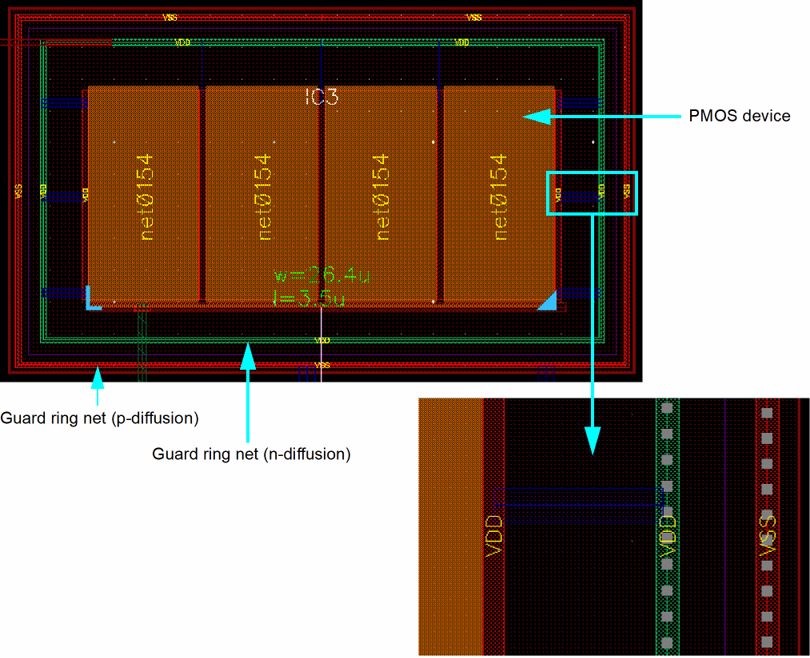
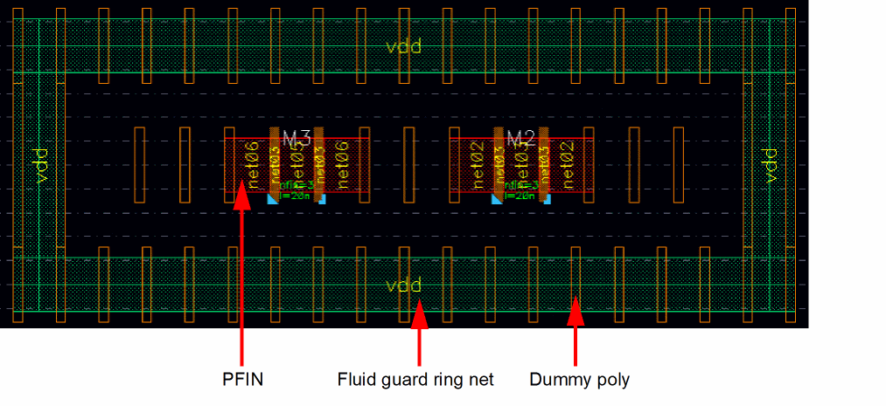

Guard Rings in Abstracted Mode
Supported objects include MPP guard rings and fluid guard rings. Substrate contact is not supported. When you turn on Smart Display in Abstracted mode, an abstract representation of guard rings is automatically displayed.
The following features define the display of guard rings in Abstracted mode:
- Visible layers include diffusion and contact. The diffusion layer is displayed in green for n-diffusion guard rings and in red for p-diffusion guard rings.
- Connectivity is shown using net labels.
MPP Guard Rings
The following figure illustrates MPP guard rings in Abstracted mode:

FinFET Fluid Guard Rings
The following figure illustrates an n-diffusion FinFET fluid guard ring in Abstracted mode:

Related Topics
Return to top